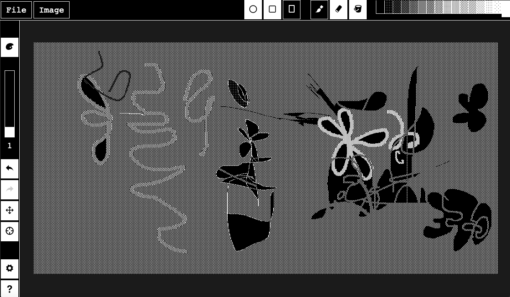

S3941337 Assignment 1
Interactive Experience Research Project - Strike Amorphic Space
By Gabriella Fenisa K (s3941337)

Link to the website
Week 2
1. What was the first thing you paid attention to when interacting with the experience?
- The features and the ability for you to customise the brush
2. Spend two minutes with the experience and create a list of each of your discrete actions.
- I clicked on the customizable brush
- I swiped and drag to draw images
- I drag to change the brush size
- I clicked the undo button when I made a mistake
- I clicked the bucket button to change colours
- I clicked image to horizontally mirror the canvas
- I clicked on brush types to change the canvas background colour
3. What part of the experience did you spend the most time engaging with?
- I spend most of my time on the brush options, experimenting with different textures on my sketches.
4. What was the most common action in your two minute interaction with the experience?
- Drawing and playing around with the blank canvas. Changing the brush types/textures. Using the undo button if i made a mistake.
5. What is your impression of the intended primary goal of the interactive experience?
- My first impression of the goal is to express creativity and having creative freedom to create anything that you want.
6. What is your impression of how the interactive experience communicates its primary goal? (what you think the primary goal is)
- I think it is accurate, when you open the website it shows a blank canvas. Where you can scribble and experiment with different shapes and sizes. To be able to express anything that you want.
7. What is your impression of how the experience should be interacted with over time? (For how long and how many different times)
- I think I could spend a lot of time on the website hence it helps with my boredom. I would visit the website once every two weeks or once a month depending on how creative I'm feeling.
8. What is your impression of how the interactive experience communicates how it should be interacted with over time?(why do you think you will visit the website longer or more than one time)
- I would visit the website more than once because it helps with my boredom and it can help with any creative thoughts and ideas that I have currently that I might need to express.
I like the fact that the website only has black and white colour making it more challenging to express a certain feeling in a sketch or a drawing.
Week 3
9. What other media forms (digital or otherwise) does the experience reference?
- I feel like this website is definitely a reference to Microsoft paint. As it has the same features, elements and purpose of it.
10. What does this reference or references suggest to you about how you should act when engaging with it?
- You can draw and express your creativity. You can do anything that you want with no limits, it is something that is fairly simple as it has a lot of freedom on what you could do. Engaging with the features of different paints, brushes and the ability to zoom in and out to sketch and draw.
11. What does this reference or references suggest to you about how you should feel when engaging with it?
- When engaging with it I feel nostalgic. I feel the need to explore and create something. The layout of the website is very simple and effective for new users. It has a lot of freedom as it challenges us to create something out of nothing. Experimenting with different features on a blank canvas.
12. What is the most frustrating element of the interaction to you and what makes it frustrating?
- Due to the nostalgic elements of the website. I do feel like it is really hard to navigate throughout the canvas and to draw precise lines as the website doesn't really support that action. As there are no features for you to draw precise small lines.
13. What is the most satisfying element of the interaction to you and what makes it satisfying?
- The most satisfying element is definitely the fill tool as it is very efficient and quick to use. It is a very straightforward tool, filling up every space that you need to fill out. Giving you a final vision on how your artwork may look. Making the drawing come to life.